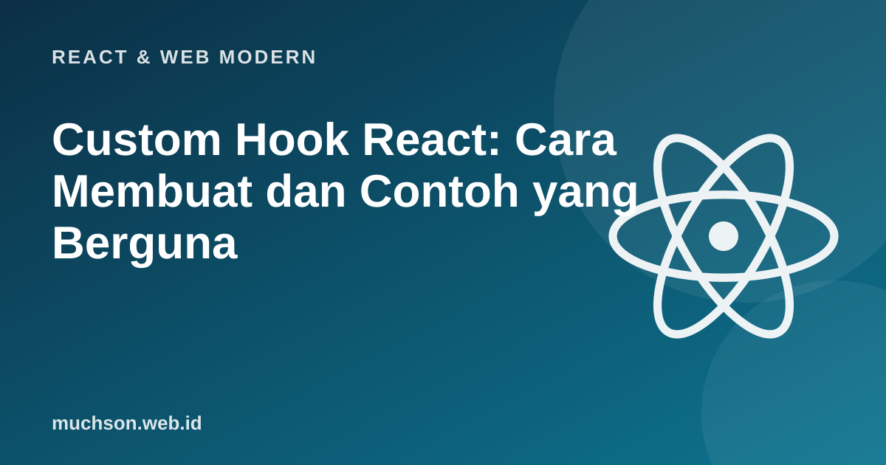

Beranda › Artikel › React & Web Modern
React & Web ModernCustom Hook React: Cara Membuat dan Contoh yang Berguna
Custom hook adalah cara React untuk berbagi logika yang bersifat stateful antar komponen: fungsi biasa yang namanya diawali "use" dan memanggil hook lain. Bila Anda menyalin pasangan useState dan useEffect yang sama ke tiga komponen, itulah sinyal untuk mengekstraknya menjadi hook.
Sebaiknya sudah paham: useState, useEffect

Setelah membaca dan mencoba materi ini, Anda mampu:
- menjelaskan apa itu custom hook dan aturannya
- mengekstrak logika berulang menjadi hook
- membuat hook useToggle, useDebounce, dan useLocalStorage
- memisahkan logika murni dari bagian yang memakai hook agar mudah diuji
- mengenali kapan sebuah hook layak dibuat
Aturan dan ide dasar
- Custom hook adalah fungsi yang namanya dimulai dengan
usedan memanggil hook lain di dalamnya. - Ia berbagi logika, bukan berbagi state: setiap komponen yang memanggilnya mendapat salinan state sendiri.
- Aturan hooks tetap berlaku: panggil di tingkat atas, bukan dalam kondisi atau perulangan.
- Awalan
usememberi tahu linter dan pembaca bahwa fungsi ini mengikuti aturan hooks.
Contoh 1: useToggle
import { useState, useCallback } from 'react';
export function useToggle(awal = false) {
const [nilai, setNilai] = useState(awal);
const balik = useCallback(() => setNilai(n => !n), []);
return [nilai, balik, setNilai];
}
// pemakaian
function Panel() {
const [buka, balikBuka] = useToggle();
return (
<>
<button onClick={balikBuka}>{buka ? 'Tutup' : 'Buka'}</button>
{buka && <p>Isi panel</p>}
</>
);
}Contoh 2: useDebounce
Saat pengguna mengetik di kolom pencarian, kita tidak ingin menembak API di setiap huruf. Debounce menunda nilai sampai pengguna berhenti mengetik sejenak.
import { useState, useEffect } from 'react';
export function useDebounce(nilai, tundaMs = 400) {
const [ditunda, setDitunda] = useState(nilai);
useEffect(() => {
const id = setTimeout(() => setDitunda(nilai), tundaMs);
return () => clearTimeout(id); // ketikan baru membatalkan timer sebelumnya
}, [nilai, tundaMs]);
return ditunda;
}
function Pencarian() {
const [kata, setKata] = useState('');
const kataTunda = useDebounce(kata, 400); // hanya berubah setelah 400 ms tanpa ketikan
// useEffect(() => { cariKeApi(kataTunda); }, [kataTunda]);
return <input value={kata} onChange={e => setKata(e.target.value)} />;
}Logika intinya, yaitu "tunda dan batalkan yang sebelumnya", dapat dijalankan dan dipahami tanpa React:
function buatDebounce(fn, tundaMs) {
let id;
return (...args) => {
clearTimeout(id); // batalkan pemanggilan yang tertunda
id = setTimeout(() => fn(...args), tundaMs);
};
}
const cari = buatDebounce(kata => console.log('mencari ke server:', kata), 50);
// pengguna mengetik "r", "re", "rea", "reac" dengan jeda pendek, lalu berhenti
['r', 're', 'rea', 'reac'].forEach((kata, i) => setTimeout(() => { console.log('ketik:', kata); cari(kata); }, i * 10));
setTimeout(() => console.log('(selesai)'), 200);ketik: r
ketik: re
ketik: rea
ketik: reac
mencari ke server: reac
(selesai)Contoh 3: useLocalStorage
import { useState, useEffect } from 'react';
export function useLocalStorage(kunci, awal) {
const [nilai, setNilai] = useState(() => {
try {
const tersimpan = window.localStorage.getItem(kunci);
return tersimpan !== null ? JSON.parse(tersimpan) : awal;
} catch {
return awal; // localStorage bisa diblokir atau berisi data rusak
}
});
useEffect(() => {
try { window.localStorage.setItem(kunci, JSON.stringify(nilai)); } catch { /* abaikan */ }
}, [kunci, nilai]);
return [nilai, setNilai];
}
// const [tema, setTema] = useLocalStorage('tema', 'terang');Ekstrak logika murninya agar bisa diuji
// Bagian yang tidak butuh React dipisahkan: mudah diuji
function bacaTersimpan(penyimpanan, kunci, awal) {
try {
const teks = penyimpanan.getItem(kunci);
return teks !== null ? JSON.parse(teks) : awal;
} catch {
return awal;
}
}
// penyimpanan tiruan
const tiruan = data => ({ getItem: k => (k in data ? data[k] : null) });
console.log('belum ada ->', bacaTersimpan(tiruan({}), 'tema', 'terang'));
console.log('ada ->', bacaTersimpan(tiruan({ tema: '"gelap"' }), 'tema', 'terang'));
console.log('data rusak ->', bacaTersimpan(tiruan({ tema: '{bukan json' }), 'tema', 'terang'));
console.log('akses gagal ->', bacaTersimpan({ getItem() { throw new Error('diblokir'); } }, 'tema', 'terang'));belum ada -> terang
ada -> gelap
data rusak -> terang
akses gagal -> terangKapan layak membuat hook
| Tanda | Tindakan |
|---|---|
| Pasangan useState + useEffect yang sama muncul di beberapa komponen | Ekstrak ke hook |
| Komponen terlalu panjang karena logika non-tampilan | Pindahkan logika ke hook bernama jelas |
| Hanya dipakai sekali dan sederhana | Biarkan di komponen; jangan memaksa abstraksi |
| Hook yang hanya membungkus satu useState | Biasanya tidak perlu |
Nama hook harus menjelaskan tujuan (useOnlineStatus, useDebounce), bukan siklus hidup (useMount). Hindari hook "serba bisa" yang menerima callback awal-akhir; hook yang baik punya satu tanggung jawab yang jelas.
1. Buat hook useOnlineStatus yang melacak navigator.onLine dengan event "online" dan "offline".
2. Mengapa useLocalStorage memakai try/catch?
3. Apa bedanya custom hook dan komponen?
4. Bagaimana membuat useDebounce lebih umum untuk fungsi, bukan nilai?
- Custom hook: fungsi berawalan use yang berbagi logika, bukan state.
- Ekstrak bila logika stateful berulang; beri nama sesuai tujuan.
- useToggle, useDebounce, dan useLocalStorage adalah contoh praktis.
- Pisahkan logika murni agar bisa diuji tanpa React; jangan memaksa abstraksi dini.
Tanya jawab
Pustaka hook siap pakai apa yang populer?
Bisakah hook memanggil hook lain?
Apakah hook bisa async?
Referensi
- React: Reusing Logic with Custom Hooks
- React: Rules of Hooks
- MDN: Web Storage API
- React Reference: Hooks